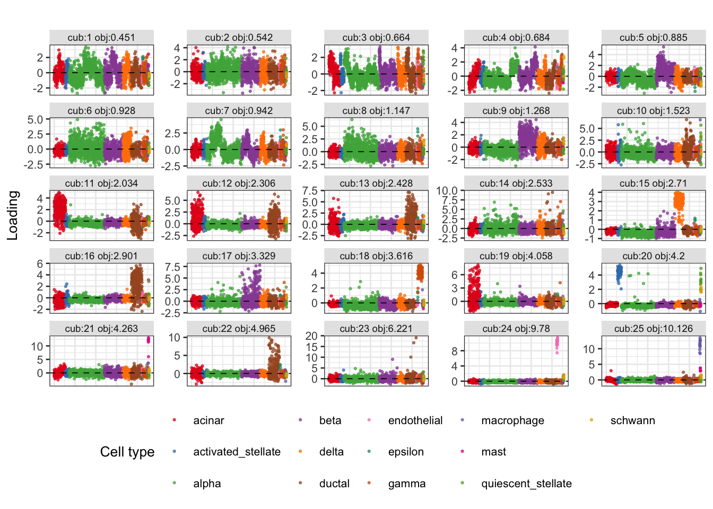
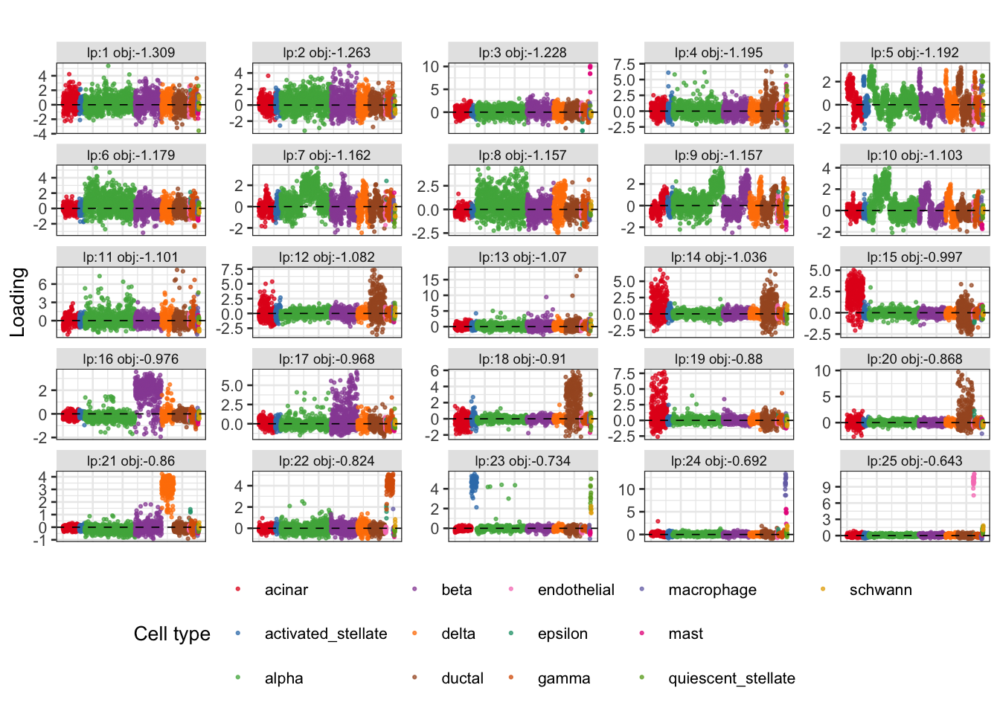
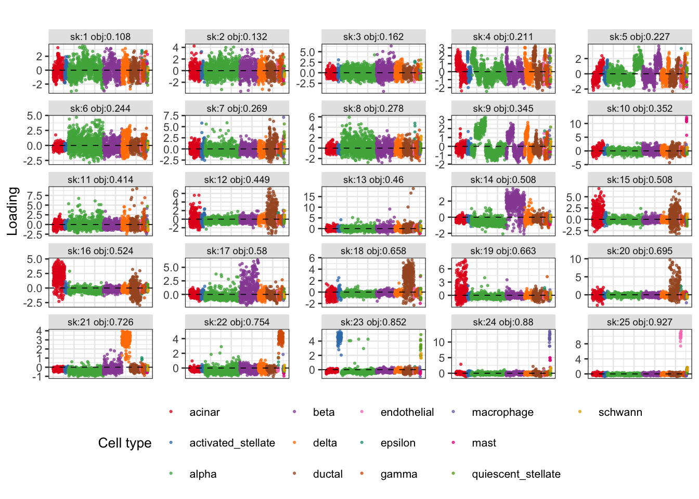

Last updated: 2026-09-16
Checks: 7 0
Knit directory: single-cell-jamboree/analysis/
This reproducible R Markdown analysis was created with workflowr (version 1.7.2). The Checks tab describes the reproducibility checks that were applied when the results were created. The Past versions tab lists the development history.
Great! Since the R Markdown file has been committed to the Git repository, you know the exact version of the code that produced these results.
Great job! The global environment was empty. Objects defined in the global environment can affect the analysis in your R Markdown file in unknown ways. For reproduciblity it’s best to always run the code in an empty environment.
The command set.seed(1) was run prior to running the code in the R Markdown file. Setting a seed ensures that any results that rely on randomness, e.g. subsampling or permutations, are reproducible.
Great job! Recording the operating system, R version, and package versions is critical for reproducibility.
Nice! There were no cached chunks for this analysis, so you can be confident that you successfully produced the results during this run.
Great job! Using relative paths to the files within your workflowr project makes it easier to run your code on other machines.
Great! You are using Git for version control. Tracking code development and connecting the code version to the results is critical for reproducibility.
The results in this page were generated with repository version d3dbf5b. See the Past versions tab to see a history of the changes made to the R Markdown and HTML files.
Note that you need to be careful to ensure that all relevant files for the analysis have been committed to Git prior to generating the results (you can use wflow_publish or wflow_git_commit). workflowr only checks the R Markdown file, but you know if there are other scripts or data files that it depends on. Below is the status of the Git repository when the results were generated:
Ignored files:
Ignored: .Rhistory
Ignored: .Rproj.user/
Ignored: analysis/.RData
Untracked files:
Untracked: analysis/Rplot.pdf
Untracked: analysis/fit_pancreas_celseq2_gbcd.Rout
Untracked: analysis/fit_pancreas_celseq2_snmf_k100.R
Untracked: analysis/fit_pancreas_celseq2_snmf_k40.R
Untracked: analysis/fit_pancreas_celseq2_snmf_k40.Rout
Untracked: analysis/pancreas_celseq2_snmf_k100.RData
Untracked: analysis/pancreas_celseq2_snmf_ms.Rmd
Untracked: output/pancreas_celseq2_snmf_k100.RData
Untracked: output/pancreas_celseq2_snmf_k40.RData
Unstaged changes:
Modified: analysis/pancreas_celseq2_ica.Rmd
Modified: single-cell-jamboree.Rproj
Note that any generated files, e.g. HTML, png, CSS, etc., are not included in this status report because it is ok for generated content to have uncommitted changes.
These are the previous versions of the repository in which changes were made to the R Markdown (analysis/pancreas_celseq2_ica_02.Rmd) and HTML (docs/pancreas_celseq2_ica_02.html) files. If you’ve configured a remote Git repository (see ?wflow_git_remote), click on the hyperlinks in the table below to view the files as they were in that past version.
| File | Version | Author | Date | Message |
|---|---|---|---|---|
| Rmd | d3dbf5b | Matthew Stephens | 2026-09-16 | Fix cubic contrast: G(x)=x^3 so g=3x^2, g prime=6x |
| html | 3d4592e | Matthew Stephens | 2026-09-16 | Build site. |
| Rmd | 4610037 | Matthew Stephens | 2026-09-16 | Fix: centre data before whitening |
| html | e748825 | Matthew Stephens | 2026-09-16 | Build site. |
| Rmd | a8d1267 | Matthew Stephens | 2026-09-16 | Add pancreas_celseq2_ica_02: rank-r ICA with cubic, logPhi, x|x| |
A second look at ICA on the pancreas CEL-seq2 data, incorporating lessons from the first analysis (pancreas_celseq2_ica.Rmd). Key differences from the first analysis:
library(fastICA)
library(Matrix)
library(ggplot2)
library(caret)
load("../data/pancreas.RData")
set.seed(1)
i <- which(sample_info$tech == "celseq2")
sample_info <- sample_info[i, ]
counts <- counts[i, ]
x <- colSums(counts > 0)
j <- which(x > 9)
counts <- counts[, j]
a <- 1
s <- rowSums(counts)
s <- s / mean(s)
Y <- MatrixExtra::mapSparse(counts / (a * s), log1p)
Y <- scale(Y, scale = FALSE) # centre columnsn <- nrow(Y)
n.comp <- 25
r <- n.comp
Y.svd <- svd(Y, nu = n.comp, nv = 0)
# U: n x n.comp, orthonormal columns (left singular vectors of centred Y)
U_c <- Y.svd$u[, 1:n.comp]
# Whitened row space (n.comp x n, as used by rank-r fastICA)
U_w <- sqrt(n) * t(U_c)celltype_palette <- c(
"#E41A1C", "#377EB8", "#4DAF4A", "#984EA3", "#FF7F00",
"#A65628", "#F781BF", "#1B9E77", "#D95F02", "#7570B3",
"#E7298A", "#66A61E", "#E6AB02", "#A6761D", "#666666"
)
# Polar factor via eigendecomposition (avoids SVD column reordering).
polar <- function(W) {
eig <- eigen(t(W) %*% W, symmetric = TRUE)
Ainvhalf <- eig$vectors %*%
diag(1 / sqrt(pmax(eig$values, 1e-14))) %*%
t(eig$vectors)
W %*% Ainvhalf
}
prune_and_count_cluster <- function(L, tau = 0.9) {
L <- L[, apply(L, 2, sd) > 1e-10, drop = FALSE]
dist_mat <- as.dist(1 - abs(cor(L)))
hc <- hclust(dist_mat, method = "complete")
clusters <- cutree(hc, h = 1 - tau)
kept_indices <- match(unique(clusters), clusters)
cluster_sizes_table <- table(clusters)
kept_cluster_ids <- clusters[kept_indices]
cluster_sizes <- as.integer(cluster_sizes_table[as.character(kept_cluster_ids)])
list(pruned_matrix = L[, kept_indices, drop = FALSE],
cluster_sizes = cluster_sizes,
kept_indices = kept_indices,
cluster_assignments = clusters)
}
plot_loadings_matrix <- function(Lhat, label_prefix = "c:", si = sample_info,
obj_fn = function(L) colMeans(L^4),
max_panels = 25, labels = NULL) {
obj <- obj_fn(Lhat)
n_comp <- ncol(Lhat)
if (is.null(labels)) {
o <- order(obj)
Lhat <- Lhat[, o, drop = FALSE]
obj <- obj[o]
comp_labels <- make.unique(paste0(label_prefix, seq_len(n_comp),
" obj:", round(obj, 3)))
} else {
comp_labels <- make.unique(paste0(labels, " obj:", round(obj, 3)))
}
cell_order <- order(si$celltype)
df <- data.frame(
rank = rep(seq_len(nrow(Lhat)), n_comp),
celltype = rep(si$celltype[cell_order], n_comp),
loading = as.vector(Lhat[cell_order, ]),
component = factor(rep(comp_labels, each = nrow(Lhat)),
levels = comp_labels)
)
pages <- split(comp_labels,
ceiling(seq_along(comp_labels) / max_panels))
for (pg in seq_along(pages)) {
pg_labels <- pages[[pg]]
df_pg <- df[df$component %in% pg_labels, ]
df_pg$component <- factor(as.character(df_pg$component),
levels = pg_labels)
pg_title <- if (length(pages) > 1)
paste0("page ", pg, "/", length(pages)) else ""
p <- ggplot(df_pg, aes(x = rank, y = loading, color = celltype)) +
geom_point(size = 0.5, alpha = 0.7) +
geom_hline(yintercept = 0, linetype = "dashed", linewidth = 0.3) +
facet_wrap(~ component, ncol = 5, scales = "free_y") +
scale_color_manual(values = celltype_palette) +
labs(x = NULL, y = "Loading", color = "Cell type", title = pg_title) +
theme_bw(base_size = 10) +
theme(axis.text.x = element_blank(),
axis.ticks.x = element_blank(),
strip.text = element_text(size = 7,
margin = margin(2, 0, 2, 0)),
strip.background = element_rect(fill = "grey90", color = NA),
legend.position = "bottom")
print(p)
}
}# --- G(x) = x^3 (skewness) ---
# g(x) = G'(x) = 3x^2, g'(x) = G''(x) = 6x
fastica_update_cubic_rankr <- function(U, W) {
P <- t(U) %*% W
G <- 3 * P^2
G2 <- 6 * P
W <- U %*% G - sweep(W, 2, colSums(G2), "*")
polar(W)
}
objective_cubic <- function(L) colMeans(L^3)
# --- log-Phi ---
# G(x) = log Phi(alpha*x), g = alpha*h, g' = alpha^2*(-alpha*x*h - h^2)
fastica_update_logphi_rankr <- function(U, W, alpha = 2) {
P <- t(U) %*% W
u <- alpha * P
h <- exp(dnorm(u, log = TRUE) - pnorm(u, log.p = TRUE))
G <- alpha * h
G2 <- alpha^2 * (-u * h - h^2)
W <- U %*% G - sweep(W, 2, colSums(G2), "*")
polar(W)
}
objective_logphi <- function(L, alpha = 2) colMeans(pnorm(alpha * L, log.p = TRUE))
# --- x|x| (skew tilt, no log-cosh) ---
# g(x) = 2|x|, g'(x) = 2*sign(x), G(x) = x|x|
fastica_update_skew_rankr <- function(U, W) {
P <- t(U) %*% W
G <- 2 * abs(P)
G2 <- 2 * sign(P)
W <- U %*% G - sweep(W, 2, colSums(G2), "*")
polar(W)
}
objective_skew <- function(L) colMeans(L * abs(L))set.seed(1)
n_iter <- 500
W_cubic <- polar(matrix(rnorm(n.comp * r), n.comp, r))
for (i in seq_len(n_iter))
W_cubic <- fastica_update_cubic_rankr(U_w, W_cubic)
Lhat_cubic <- t(U_w) %*% W_cubic # n x r
plot_loadings_matrix(Lhat_cubic, label_prefix = "cub:",
obj_fn = objective_cubic)
set.seed(1)
n_iter <- 500
W_lp <- polar(matrix(rnorm(n.comp * r), n.comp, r))
for (i in seq_len(n_iter))
W_lp <- fastica_update_logphi_rankr(U_w, W_lp, alpha = 2)
Lhat_lp <- t(U_w) %*% W_lp
plot_loadings_matrix(Lhat_lp, label_prefix = "lp:",
obj_fn = objective_logphi)
set.seed(1)
n_iter <- 500
W_skew <- polar(matrix(rnorm(n.comp * r), n.comp, r))
for (i in seq_len(n_iter))
W_skew <- fastica_update_skew_rankr(U_w, W_skew)
Lhat_skew <- t(U_w) %*% W_skew
plot_loadings_matrix(Lhat_skew, label_prefix = "sk:",
obj_fn = objective_skew)
sessionInfo()R version 4.4.2 (2024-10-31)
Platform: aarch64-apple-darwin20
Running under: macOS 26.5.2
Matrix products: default
BLAS: /System/Library/Frameworks/Accelerate.framework/Versions/A/Frameworks/vecLib.framework/Versions/A/libBLAS.dylib
LAPACK: /Library/Frameworks/R.framework/Versions/4.4-arm64/Resources/lib/libRlapack.dylib; LAPACK version 3.12.0
locale:
[1] C
time zone: America/Chicago
tzcode source: internal
attached base packages:
[1] stats graphics grDevices utils datasets methods base
other attached packages:
[1] caret_7.0-1 lattice_0.22-9 ggplot2_4.0.2 Matrix_1.7-4 fastICA_1.2-7
loaded via a namespace (and not attached):
[1] tidyselect_1.2.1 timeDate_4052.112 dplyr_1.2.0
[4] farver_2.1.2 S7_0.2.1 fastmap_1.2.0
[7] pROC_1.19.0.1 promises_1.5.0 digest_0.6.39
[10] rpart_4.1.24 timechange_0.4.0 lifecycle_1.0.5
[13] survival_3.8-6 MatrixExtra_0.1.15 magrittr_2.0.4
[16] compiler_4.4.2 rlang_1.1.7 sass_0.4.10
[19] tools_4.4.2 yaml_2.3.12 data.table_1.18.2.1
[22] knitr_1.51 labeling_0.4.3 plyr_1.8.9
[25] RColorBrewer_1.1-3 workflowr_1.7.2 withr_3.0.2
[28] purrr_1.2.1 nnet_7.3-20 grid_4.4.2
[31] stats4_4.4.2 git2r_0.36.2 future_1.69.0
[34] globals_0.19.0 scales_1.4.0 iterators_1.0.14
[37] MASS_7.3-65 cli_3.6.5 rmarkdown_2.30
[40] generics_0.1.4 otel_0.2.0 future.apply_1.20.2
[43] reshape2_1.4.5 cachem_1.1.0 stringr_1.6.0
[46] splines_4.4.2 parallel_4.4.2 vctrs_0.7.2
[49] hardhat_1.4.2 jsonlite_2.0.0 listenv_0.10.0
[52] foreach_1.5.2 gower_1.0.2 jquerylib_0.1.4
[55] recipes_1.3.1 glue_1.8.0 parallelly_1.46.1
[58] codetools_0.2-20 lubridate_1.9.5 stringi_1.8.7
[61] gtable_0.3.6 later_1.4.6 tibble_3.3.1
[64] pillar_1.11.1 htmltools_0.5.9 float_0.3-3
[67] ipred_0.9-15 lava_1.8.2 R6_2.6.1
[70] rprojroot_2.1.1 evaluate_1.0.5 RhpcBLASctl_0.23-42
[73] httpuv_1.6.16 bslib_0.10.0 class_7.3-23
[76] Rcpp_1.1.1 nlme_3.1-168 prodlim_2026.03.11
[79] whisker_0.4.1 xfun_0.56 fs_1.6.6
[82] pkgconfig_2.0.3 ModelMetrics_1.2.2.2